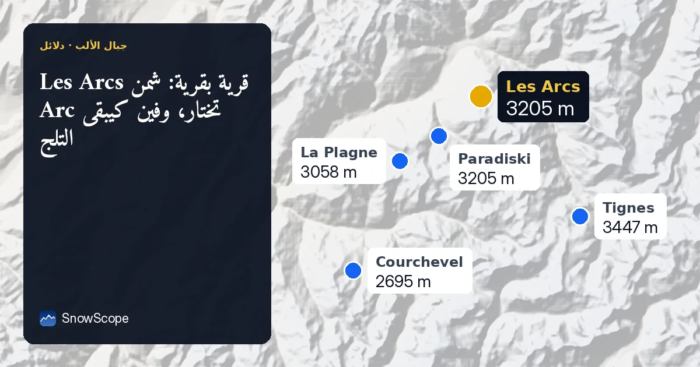

Les Arcs قرية بقرية: شمن Arc تختار، وفين كيبقى التلج
Les Arcs كتتفرقع على الجبل فأربعة دواوير مبنيين بقصد، مرتبين بالعلو فوق Bourg-Saint-Maurice. فين كاتسكن كيخدمك على الأسبوع كاملو: قاش التلج كايكون فعندك، كيفاش كاتولي لهناك، و أشنو البيستات كاتفتحك كل صباح. الاختيار ما سهل، و كاتاثر بزاف من كيفاش كاتفكر.
شوف توقعات التلج مباشرة ديال Les Arcs فالتطبيق ديال SnowScopeالعلو ديال التلج، التنبيهات والخريطة 3D، فابور.

Arc 1600: النقطة الأولى الموصولة
Arc 1600 فتح سنة 1968 و باقي أسهل دوار فاش توصلي بلا ما تسوقي. التليفريك Arc en Ciel، مبني سنة 1986، كيتاخد حوالي 7 دقايق من محطة Bourg-Saint-Maurice. للعايلات كايوصلوا بالتران أو اللي كايحبوا التنقل القصير على العلو، هادشي وحدو كيكفي باش تقرري.
فـ 1,222 م، Arc 1600 جاي فرجل الجبل، فاش كايقبض أقلّ تلج. من التسجيل ديال 46 شتوات اللي فاتو، العلو ديال التلج النرمال كاتكون حوالي 84 سم. بالضد، وحد 2 جمعة وسط أكثر الشتوات كايقاو 50 سم على الأقل فهاد الطول. البيستات اللي كايترجعوا للدوار هي أول ما كاتسقع بعد الذوب. إذا سكنتي هنا، خططي لأيام البيست الطري أو الطرق الصعيبة ليناير وفبراير، وقتاش التلج أعمق.

Arc 1800: العلو ديال الوسط
Arc 1800 فتح سنة 1974 واحد الدوار الثاني و يتاسب لاللي كايبغاوا البيستات ديال الوسط بلا ما يرفعوا للعلو بزاف. موضعو بين الرجل والنقطة ديال الوسط فحسابنا، فاش التلج كايقوي مع تقدم الموسم. ديسمبر كاتكون فيها غطية متواضعة، بس من يناير واللي بعد التلج كايثقل دروجة دروجة.
الدوار هاد كاتخدم المجموعات اللي ما كايبغاوا يضحوا بالتنقل أو الأمان ديال التلج. البيستات اللي ترجع للدوار، لكن كايقاين بسرعة وقت حر مارس. إذا العطلة ديالك فمارس أو بعد، أفضل تسكني فعلو أكثر.
Arc 1950 و Arc 2000: دوار التلج الغزير
Arc 2000 فتح سنة 1979 و Arc 1950، أكثر السكنات، تمم سنة 2008. كلا جاي قريب من 2,213 م، نقطة الوسط ديالنا، حيت الصورة ديال التلج كتبدل كاملة. ديسمبر كاتعطي حوالي 68 سم فالمتوسط، يناير حوالي 115 سم، فبراير حوالي 150 سم، و مارس حوالي 160 سم، و القمة النرمالية حوالي 191 سم من الشتا كاملا. فهاد الطول، تسعة من عشرة شتوات كايقاوا 50 سم على الأقل لـ 21 جمعة كاملة. هاد عشرة مرات أكثر من Arc 1600.
الدواوير هاي كذاك تقللك الطريق للـ Aiguille Rouge، أعلى قمة فالمنطقة، و لمضمار السكي الأولمبي من 1992. فأعلى نقطة ديال الميدان، قريب من 3,205 م، القمة النرمالية كاتوصل حوالي 379 سم، و أبريل كيكون أعمق شهر بحوالي 315 سم. إذا أمان التلج هو اللي كايحكم فاختيارك، Arc 1950 أو Arc 2000 هو مكانك.
العلو واحد الحيط ديالك
التسجيل ديال 46 شتوات اللي فاتو كايضهر نموذج واضح: العلو ديال التلج كايصعد فقة مع الارتفاع. فالرجل، أسوأ شتا فالتسجيل شافت 48 سم بس؛ الأحسن وصلت 124 سم. فالوسط، تلك الأرقام كانت 142 سم لـ 271 سم. قريب من الأعلى، كايمتد من 288 سم لـ 552 سم. إذا كاتزارتي سنة غير أكيدة أو أول الموسم، الدواوير العليا كاتعطيك أمان بزاف.
الشتا اللي فات، 2025-26، ضهرات إشنو كاتاثر هادشي. فالرجل القمة كانت 100 سم؛ فالوسط وصلت 212 سم؛ قريب من الأعلى، 342 سم. واحد السكي فـ Arc 1600 تاك الشتا كان عندو نص التلج ديال واحد فـ Arc 2000، حتى فنفس الجبل.
Paradiski: تبديل الجبل ديالك
من ديسمبر 2003 الكابل ديال Vanoise Express كايربط Les Arcs بـ Peisey-Vallandry و La Plagne، كاتخلق Paradiski فيها حوالي 425 كم ديال البيستات. لأسبوع كاملا فالمبيت، إضافة واحد أو جوج دنيا Paradiski كاتكفي باش تبدلي خيارات ديالك بلا ما تشري باص مورد متعدد. تجربة الكابل نفسو واحد الحاجة ديال الفرجة.
ملحوظة وحدة: الربط فالعلو كيمكن يسقع مع الريح القوية أو الرؤية السيئة. خطط ليوم Paradiski ديالك لوقت هادية، و شوف الحالة قبل ما تطلعي.
التلج كيفاش اتبدل
التسجيل الطويل كايضهر نقل. فأول 15 شتا من 1980-81، القمة النرمالية فالوسط (2,213 م) كانت حوالي 212 سم و الجهة كايشافت التلج على الأرض حوالي 256 نهار. فأحدث 15 شتا من 2025-26، تلك الأرقام نزلت لحوالي 182 سم و 226 نهار. أيام التلج نقصت حوالي جمعة من أربعين سنة.
الشد هاد معناه دوار العلو كاتعطيك حيط أكثر ضد الشتوات الضعيفة اللي ممكن تجي. الشتا اللي فات خاصت الموضة ديال بعد بـ 212 سم فالوسط، لكن الرهان على العلو أكثر باقي الاستراتيجية الآمنة.
نصايح للي كيتزلجو
- إذا جيتي بالتران: التليفريك لـ Arc 1600 كايخليك من التنقل براس الطريق بس كايجيبك التلج الضعيف. خططي للبيستات الصعيبة أو البيست الطري ليناير أو فبراير وقتاش الرجل أعمق.
- باش تاخذي التلج الأمين طول مكثك، اختاري Arc 1950 أو Arc 2000. فهاد الطول، 9 من 10 شتوات كايقاوا التلج الحيح 21 جمعة أو أكثر.
- احجزي ليوم Paradiski بس إذا التوقعات هادية و صافية فالعلو. الريح كاتسقع الكابل كاتاخر.
- دور في نشرة الانهيارات ديال Météo-France كل صباح قبل ما تطلعي فالبيست الطري، شنو كان الدوار ديالك.
- شوف فتح التليفريكات فموقع المحطة قبل ما تحجزي. التلج على الخريطة ماتعناش المحطة كاتولي.
على هاد الأرقام
العلو ديال التلج فالمحطات هو أكثر تلج فالجهة الفوقانية فالتاريخ المكتوب؛ هادو تقديرات لمنطقة، ماشي قياس فنقطة وحدة. التوقعات يمكن تتبدل. ديما شوف النشرة الرسمية ديال الانهيارات قبل ما تخرج من البيست.
النشرات الرسمية ديال الانهيارات: Météo-France BERA
كيفاش تستاشهد بهاد المقال
للبحث، التعليم ولا الصحافة: الأرقام والرسومات تقدر تعاود تخدم بيهم بحرية تحت CC BY 4.0 مع هاد الاستشهاد.
SnowScope (2026), Les Arcs قرية بقرية: شمن Arc تختار، وفين كيبقى التلج, https://snowscope.app/blog/ar/2026/11/les-arcs-village-by-village-snow-paradiski.html, تشاف ف 2026-11-09
SnowScope (Atlas Labs). (2026, November 9). Les Arcs قرية بقرية: شمن Arc تختار، وفين كيبقى التلج. SnowScope snow reports. https://snowscope.app/blog/ar/2026/11/les-arcs-village-by-village-snow-paradiski.html
BibTeX
@misc{snowscope2026lesarcsvillagebyvillages,
author = {{SnowScope (Atlas Labs)}},
title = {Les Arcs قرية بقرية: شمن Arc تختار، وفين كيبقى التلج},
year = {2026},
month = nov,
howpublished = {\url{https://snowscope.app/blog/ar/2026/11/les-arcs-village-by-village-snow-paradiski.html}},
note = {Published 2026-11-09 18:59 UTC; accessed 2026-11-09}
}· CC BY 4.0 · الطريقة، الداتا والأدوات →
Les Arcs: التلج والحرارة حسب العلو، هاد الشتا مقارنة مع اللي فاتت (الأدوات) →
تابع Les Arcs
فابور: ميساج ملي يجي التلج، والتوقعات كل صباح.